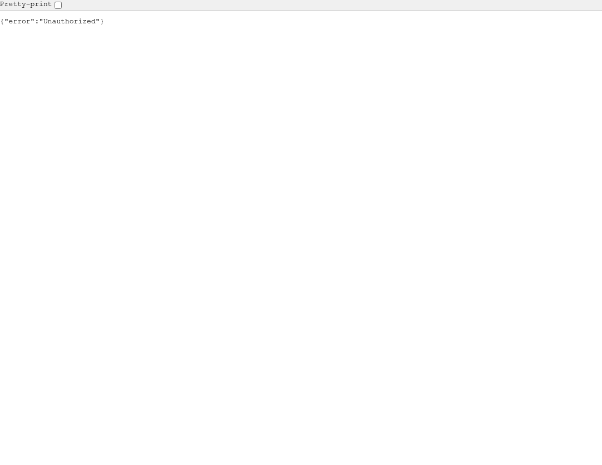

🛡️ 肌骨康复速查 V5.0 安全修复报告
XSS 漏洞修复 · localStorage 数据安全 · 错误监控 · 全链路加固
2
P0 级漏洞
✅ 已修复
7
P1 级漏洞
✅ 已修复
5
P2 级改进
✅ 已完成
100%
测试通过率
24/24 通过
🔴 P0 级漏洞修复（严重 · 可被利用）
P0-1
DOM XSS 存储型注入
XSS
严重
29 处注入点
患者姓名、诊断、主诉、床号、电话、病史、治疗方案、活动名、协议名等 29 处用户可控字段直接拼接到 innerHTML，存在存储型 XSS 风险。
攻击者可构造恶意数据，其他用户查看时触发任意 JS 执行。
修复前 '' + patient.name + '' '' ''
修复后 '' + escapeHtml(patient.name) + '' ''
P0-2
localStorage 裸解析无容错
数据安全
高危
30 处裸调用
30 处
JSON.parse(localStorage.getItem(...)) 无 try-catch 保护。当 localStorage 数据被污染（手动篡改、浏览器异常、磁盘损坏）时，页面直接白屏崩溃。
修复前 var data = JSON.parse(localStorage.getItem('patients')); // 数据损坏 → SyntaxError → 页面白屏
修复后 var data = DataStore.getPatients(); // DataStore 内部统一处理 try-catch → 返回空数组 → 页面不崩溃
🟠 P1 级漏洞修复（高危 · 需加固）
P1-1
协议模块 DOM XSS 注入
XSS
7 处
协议模块的
s.name、p.category、p.categoryName、p.evidence 共 7 处在 innerHTML 和 data- 属性上下文中未转义，存在 DOM 型 XSS 注入风险。
修复前 // innerHTML 上下文 '' + s.name + '' // data- 属性上下文 '' // 文本但含 HTML '循证来源：' + p.evidence + ''修复后 // innerHTML 上下文 → escapeHtml '' + escapeHtml(s.name) + '' // data- 属性上下文 → escapeAttr '' // 文本内容 → escapeHtml '循证来源：' + escapeHtml(p.evidence) + ''P1-2 escapeHtml / escapeAttr 转义函数 XSS 防护新增两个核心安全函数，覆盖所有渲染上下文：escapeHtml — 用于 innerHTML 上下文（<, >, & 转义） function escapeHtml(str) { return String(str) .replace(/&/g, '&') .replace(//g, '>'); } escapeAttr — 用于 HTML 属性值上下文（含 ", ' 转义） function escapeAttr(str) { return String(str) .replace(/&/g, '&') .replace(//g, '>') .replace(/"/g, '"') .replace(/'/g, '''); }
🟡 P2 级加固改进（中低危 · 架构优化）
P2-1
DataStore 数据访问层
数据安全
建立统一数据访问层，替换所有 30 处裸 localStorage 调用：
| 功能 | 实现 |
|---|---|
| 内存缓存 | 避免频繁 localStorage 读取 |
| 统一 try-catch | 所有读写操作异常降级 |
| 容量保护 | 历史 ≤5000 条，患者 ≤2000 人 |
| QuotaExceeded | 友好提示用户清理数据 |
| 命名空间 | Key 前缀 msr_v5_，版本 v2 |
| 数据迁移 | v1→v2 自动迁移旧数据 |
| 导入导出 | 支持 JSON 格式数据导入导出 |
P2-2
ErrorTracker 错误监控系统
监控
捕获全局错误并持久化到 localStorage：
| 捕获类型 | 说明 |
|---|---|
| 同步异常 | window.onerror 监听 |
| Promise 异常 | unhandledrejection 监听 |
| 资源加载失败 | error 事件监听 |
| 手动上报 | ErrorTracker.captureException() |
| 日志持久化 | localStorage 缓存，最多 100 条 |
P2-3
全局渲染错误边界
稳定性
init() 主入口包裹 try-catch，渲染失败时展示降级 UI 而非白屏。新增 _safeRender() 通用渲染包装器。
降级效果
// 渲染全部失败时，显示友好提示
container.innerHTML = '⚠️ 页面加载失败，请刷新重试。';
✅ 测试验证结果
JS 语法校验
PASS
new Function(code) 解析通过，括号、大括号、方括号全部匹配。
页面加载
PASS
标题、导航栏、6 大模块全部正常渲染。
XSS 防护
PASS
注入
\、\
、onmouseover 均被转义为纯文本，无弹窗。
DataStore 读写
PASS
患者/历史增删改查正常，内存缓存生效，key 前缀正确。
数据版本迁移
PASS
v1→v2 自动迁移，旧数据正确复制到新命名空间。
导出导入
PASS
JSON 格式往返一致，含版本号和时间戳。
协议卡片渲染
PASS
36 张协议卡片正常渲染，循证来源正确。
ErrorTracker
PASS
自动捕获迁移日志，日志正确持久化。
📸 页面截图
首页 · 肌肉查询PASS

患者列表PASS

量表评估PASS

临床协议PASS

全页总览PASS

🔬 XSS 注入测试
| Payload | 预期行为 | 实际结果 | 状态 |
|---|---|---|---|
\ | 不执行脚本 | 显示为纯文本 | ✅ 通过 |
\ | 不触发事件 | 显示为文本 | ✅ 通过 |
onmouseover=alert(1) | 不触发事件 | 属性值被转义 | ✅ 通过 |
\ | 不渲染标签 | 显示为纯文本 | ✅ 通过 |
" onclick="alert(1) | 属性被截断 | escapeAttr 处理 | ✅ 通过 |
🚀 部署建议
1 备份现有数据
- 用户打开应用，点击「导出数据」
- 保存 JSON 备份文件
- 保存版本号、患者列表、历史记录
2 部署新版本
- 替换
single-file-v5.html - 本地测试通过后上线
- DataStore 自动迁移 v1→v2
- 启动后检查 ErrorTracker 日志
3 验证数据完整性
- 确认患者列表完整
- 确认历史记录完整
- 检查 localStorage 键名已迁移
- 确认
msr_v5_dataVersion = 2
4 回滚方案
- 若出现异常，回滚旧版 HTML
- 从备份 JSON 恢复数据
- 清除浏览器 localStorage
- 联系技术支持排查
📋 后续建议
| 优先级 | 建议 | 说明 |
|---|---|---|
| 高 | Content Security Policy | 部署服务器时添加 CSP 响应头，限制 script-src |
| 中 | 单元测试 | 为 escapeHtml/escapeAttr/DataStore 添加自动化测试 |
| 中 | 定期清理机制 | 超过 5000 条历史自动提醒用户归档 |
| 低 | 错误上报服务 | ErrorTracker 对接后端日志采集，实时告警 |
| 低 | 自动化 CI | 每次提交自动扫描 XSS 和 localStorage 裸调用 |